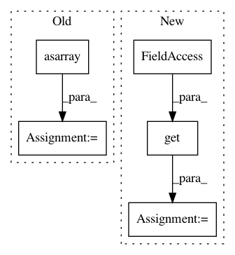

ebbc9fc0fc52a650ebd5bbbd954733bada35672e,niftynet/layer/histogram_normalisation.py,HistogramNormalisationLayer,layer_op,#HistogramNormalisationLayer#Any#Any#,58
Before Change
def layer_op(self, image_5d, mask=None):
assert image_5d.ndim == 5
image_5d = np.asarray(image_5d, dtype=float)
image_mask = None
if mask is not None:
image_mask = np.asarray(mask, dtype=np.bool)
After Change
image_mask = None
if isinstance(mask, dict):
image_mask = mask.get(self.field, None)
elif mask is not None:
image_mask = mask
elif self.binary_masking_func is not None:
image_mask = self.binary_masking_func(image_5d)
else:
// no access to mask, default to all image
image_mask = np.ones_like(image_5d, dtype=np.bool)
normalised = self._normalise_5d(image_5d, image_mask)
if isinstance(image, dict):
image[self.field] = normalised
if isinstance(mask, dict):
mask[self.field] = image_mask
else:
mask = {self.field: image_mask}
In pattern: SUPERPATTERN
Frequency: 3
Non-data size: 5
Instances
Project Name: NifTK/NiftyNet
Commit Name: ebbc9fc0fc52a650ebd5bbbd954733bada35672e
Time: 2017-08-08
Author: wenqi.li@ucl.ac.uk
File Name: niftynet/layer/histogram_normalisation.py
Class Name: HistogramNormalisationLayer
Method Name: layer_op
Project Name: Qiskit/qiskit-aqua
Commit Name: b1e4247e6f2fba4da8ad305f2e04d4f81cce9525
Time: 2018-08-30
Author: woodsp@us.ibm.com
File Name: qiskit_aqua/algorithms/adaptive/qsvm/svm_variational.py
Class Name: SVM_Variational
Method Name: init_params
Project Name: brian-team/brian2
Commit Name: 9a44bfee4725073937dc2c96f1c89ca30bd641c8
Time: 2012-10-24
Author: marcel.stimberg@ens.fr
File Name: brian2/units/fundamentalunits.py
Class Name: UnitRegistry
Method Name: __getitem__